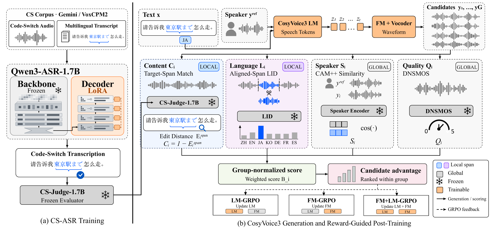

OverviewAbstract and system architecture摘要与系统架构
摘要
以普通话为主导的语码转换语音合成（TTS）需要在保持说话人音色与语音质量的同时，准确合成嵌入的外语表达。然而，整句级错误率指标可能掩盖短外语片段中的识别错误。本文提出面向普通话主导语码转换语音识别（ASR）的评测基准 CMN-X Bench，以及基于语言标签的词错误率指标（Tagged Language WER，TL-WER）。该指标通过计算嵌入外语片段与识别转写中最佳匹配窗口之间的字符级编辑距离，并对距离进行上限截断，实现片段级评测。经低秩适配（LoRA）微调的 Qwen3-ASR 评测模型在基准音频上将整句词错误率从 14.6% 降至 2.1%，将 TL-WER 从 31.5% 降至 4.3%。在此基础上，本文将该模型的内容评分与语种、说话人及语音质量反馈相结合，对 CosyVoice3 进行组相对策略优化（GRPO）后训练，并通过消融实验考察内容奖励、语种识别（LID）反馈及语言模型（LM）与流匹配（FM）模块更新范围的影响。采用 TL-WER 奖励与 LID 反馈时，联合更新 LM 与 FM 将宏平均 TL-WER 从 15.41% 降至 6.45%，优于仅更新其中一个模块的方案；仅更新 FM 则获得了最高的说话人相似度。在公开的 Minimax 测试集上，最优配置将整体词错误率从 9.85% 降至 8.18%，但不同语种上的收益存在差异。实验结果表明，内容奖励与语种奖励具有互补作用。基线系统与 GRPO 后训练系统的合成语音对比样例见本文演示页面。关键词：多语种语音合成；普通话主导语码转换；语音评测；局部奖励；组相对策略优化

Reference voicesThe two zero-shot prompts shared by all comparison rows所有对比行共享的两个零样本参考音色
| Female reference voice | 之前看到一个视频说某国际大学的一个研究人工智能的博士发表了一篇题为大语言模型会自发产生智能的论文这是对这所国际百年名校的最大耻辱 | |
| Male reference voice | 语音识别是实现人机交互的一种重要途径是自然语言处理的技术环节随着人工智能技术的发展人机交互等大量应用场景存在着流逝语音识别的需求 |
Overall rankingCMN-X Bench macro TL-WER (%), best checkpoint per configuration; lower is betterCMN-X Bench 宏平均 TL-WER（%）；每项配置取最佳检查点，数值越低越好
| Model | Content | LID | CER | TL-WER | SIM | DNS | MM-ALL |
|---|---|---|---|---|---|---|---|
| – | Base (CosyVoice3) | – | 6.75 | 15.41 | 0.875 | 4.08 | 9.85 |
| LM-GRPO | TL-WER | w/ LID | 3.68 | 7.75 | 0.926 | 4.24 | 8.18 |
| LM-GRPO | TL-WER | w/o LID | 4.03 | 10.29 | 0.906 | 4.17 | 8.84 |
| LM-GRPO | WER | w/ LID | 4.08 | 9.00 | 0.928 | 4.10 | 8.39 |
| LM-GRPO | WER | w/o LID | 3.93 | 8.06 | 0.917 | 4.23 | 8.22 |
| FM-GRPO | TL-WER | w/ LID | 6.59 | 14.74 | 0.938 | 4.02 | 9.77 |
| FM-GRPO | TL-WER | w/o LID | 6.05 | 14.85 | 0.887 | 4.10 | 9.85 |
| FM-GRPO | WER | w/ LID | 6.34 | 15.14 | 0.922 | 3.96 | 9.81 |
| FM-GRPO | WER | w/o LID | 6.04 | 12.57 | 0.897 | 3.68 | 10.00 |
| FM+LM-GRPO | TL-WER | w/ LID | 2.75 | 6.45 | 0.931 | 4.13 | 8.42 |
| FM+LM-GRPO | TL-WER | w/o LID | 3.76 | 9.05 | 0.930 | 4.10 | 8.45 |
| FM+LM-GRPO | WER | w/ LID | 3.33 | 8.04 | 0.929 | 4.17 | 8.50 |
| FM+LM-GRPO | WER | w/o LID | 3.79 | 8.54 | 0.920 | 4.27 | 8.22 |
Chinese–English
| Prompt | Voice | Base | LM-GRPO | FM-GRPO | FM+LM-GRPO |
|---|---|---|---|---|---|
| 在 develop 新的 API 时，我们要 ensure 它是 scalable 和 secure，同时 provide clear documentation 和 software development kits 给 developers，这样能 accelerate 他们的 integration process 并 reduce support tickets，最终 improve 整体的 developer experience 体验. | 女 | ||||
| 男 | |||||
| 请 prepare 一份 detailed competitive analysis，compare 我们的 product features 和 pricing 与 top competitors，identify 我们的 unique selling propositions，并 suggest actionable recommendations 来 improve 我们的 market position. | 女 | ||||
| 男 |
Chinese–Japanese
| Prompt | Voice | Base | LM-GRPO | FM-GRPO | FM+LM-GRPO |
|---|---|---|---|---|---|
| 今天那个会议真的是マジでしんどい，上司一直在那里喋喋不休，てか納期根本来不及好吗，もう無理，我现在的メンタル简直ヤバい到极点，只想赶紧下班回家躺着。 | 女 | ||||
| 男 | |||||
| 关于这次的新产品发布，マーケティングチーム负责制定プロモーション战略，而开发チーム则需要确保系统的安定性を保つ必要があります，大家辛苦了。 | 女 | ||||
| 男 |
Chinese–Korean
| Prompt | Voice | Base | LM-GRPO | FM-GRPO | FM+LM-GRPO |
|---|---|---|---|---|---|
| 本季度的财务汇报(재무 보고)显示，公司的现金流(현금 흐름)状况有所改善。这主要得益于应收账款(외상 매출금)回收率的提升(회수율 향상)，以及库存周转率(재고 회전율)的优化。财务部(재무부)建议在下个季度继续严格执行信用控制政策(신용 통제 정책)，以进一步降低坏账风险(부실 채권 위험)。 | 女 | ||||
| 男 | |||||
| 生成对抗网络由两个神经网组成，它们通过相互博弈来优化매개변수。经过大量데이터 집합的训练，生成器能够创造出极其逼真的图像，达到了以假乱真的视觉效果。 | 女 | ||||
| 男 |
Chinese–German
| Prompt | Voice | Base | LM-GRPO | FM-GRPO | FM+LM-GRPO |
|---|---|---|---|---|---|
| 昨晚 zocken 的时候，unser Team 简直太坑了，Gegner 随便一个 Angriff 我们就团灭，连 die Ausrüstung 都掉光了，真的是 eine Niederlage，下次绝对不跟 sie 组队了，太坑爹了。 | 女 | ||||
| 男 | |||||
| 在重要的客户沟通会议中，我们要明确展示最新的 Produktroadmap，重点强调新 Feature 的核心优势，并收集他们的真实 Feedback 以优化后续的 Entwicklung 战略方向和 Release 计划。 | 女 | ||||
| 男 |
Chinese–French
| Prompt | Voice | Base | LM-GRPO | FM-GRPO | FM+LM-GRPO |
|---|---|---|---|---|---|
| 比较级的不规则变化需牢记。bon 的比较级不是 plus bon，而是 meilleur。看这句 Ce gâteau est meilleur que l'autre，直接用 meilleur 表示这个蛋糕比另一个更好吃。同样 mal 的比较级是 pire。做语法分析时，一定要避开 plus bon 这种典型错误，掌握这些特殊形式。 | 女 | ||||
| 男 | |||||
| 法国 Institut Pasteur 的顶尖科学家们在 recherche fondamentale 方面取得了重要新发现，这将有助于加速针对多种热带疾病的 développement de vaccins，造福全球广大患者。 | 女 | ||||
| 男 |
Chinese–Spanish
| Prompt | Voice | Base | LM-GRPO | FM-GRPO | FM+LM-GRPO |
|---|---|---|---|---|---|
| Perdón，同学们，当我们在西班牙街头不小心撞到别人时，一定要及时表达歉意，而受到帮助后则要说 muchas gracias。 | 女 | ||||
| 男 | |||||
| 在托莱多 perderse en la ciudad 的小巷里，发现了一家 tienda de recuerdos，买了些 recuerdos inolvidables，qué ciudad tan bonita。 | 女 | ||||
| 男 |